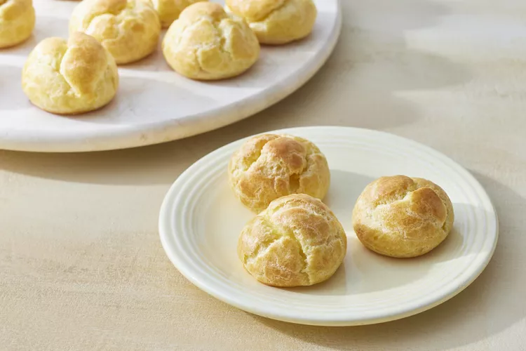

Classic Cream Puffs

Description
This traditional French pastry is first cooked on the stove top
before the warm dough gets transferred to a pastry bag and piped onto
baking sheets to be finished in the oven.
It is especially important to pay attention to your technique and follow the
instructions correctly when you add the eggs. If it's damp on the inside, the
puff may collapse or quickly become soggy.
Ingredients
- 1/2 cup unsalted butter, cut into pieces
- 1 teaspoon sugar (optional)
- 1/2 teaspoon salt
- 1 cup all-purpose flour
- 5 large eggs
- No-Fuss Pastry Cream
Steps
- Preheat oven to 375°F. Line two baking sheets with parchment paper.
- In a medium saucepan over medium-high heat, combine butter, sugar, salt and 1 cup water.
- Bring to a boil and quickly stir in the flour with a wooden spoon. Continue to stir until a film forms on the bottom of the pan.
- Remove from heat and transfer contents to a bowl to cool slightly, about 3 minutes. Add 4 eggs, one at a time, stirring vigorously to entirely incorporate egg after each addition.
- For the egg wash, whisk together the remaining egg with 1 tablespoon water. Set aside.
- Transfer the pâte à choux to a large pastry bag fitted with a 5/8-inch plain tip.
- Pipe 1 1/2-inch rounds onto each prepared pan.
- Gently smooth the pointed peaks with a moistened finger, rounding tops to ensure even rising.
- Brush tops with reserved egg wash. Bake until puffs rise and are golden brown, about 30 minutes. Let cool on sheets on wire racks. Puffs can be stored at room temperature for up to 1 day.
- Use a paring knife to make a small X in the bottom of each puff to create an opening for filling. Transfer pastry cream to a pastry bag fitted with a 1/8-inch plain round tip. Insert the tip into the opening of each pastry, and pipe to fill with pastry cream. Serve immediately.